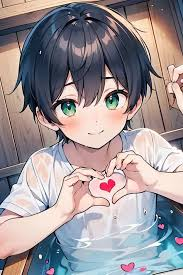

No quiero que te sientas mal tampoco, porque mi corazón esta tranquilo, pase por muchos procesos y no puedo cambiar mi escencia, siempre elijo desde el corazón, porque el tiempo no regresa y quiero disfrutar el poco tiempo que me quede, sentir..es lindo, puede ser doloroso, pero asi pasa, de una madre a un hijo, de un padre a un hijo...puede que no todos tengan esa capacidad...y no tenerla no esta mal...muchas veces es el temor a sentir o las malas experiencias que crean un caparazón de hielo. Puede que no me quieras cerca, lo entiendo, puede que no quieras hablar conmigo, pueden ser demasiadas cosas...pero eso no va cambiar lo que siento, vivire con esto lo que tenga que vivir, puede que duela, pero no duele porque sea malo, duele por que no esta...y si, pudes sentir dolor y ser feliz al mismo tiempo, yo sentí el dolor en la piel y no me lo causaste tu, asi que no te sientas mal...las cosas que pasamos ya pasaron. Eres una de las personas que me demostro sinceridad en su momento y te guarde asi. No importa lo que pase en el futuro, el amor que de diste, es fuerte, para una persona como yo, que estaba en la oscuridad. Sonrie y se mejor cada dia. si?